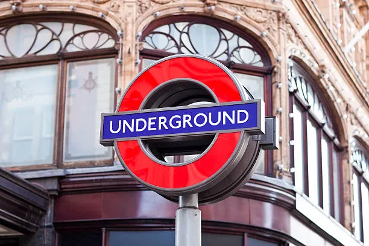
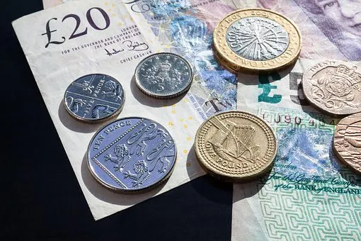
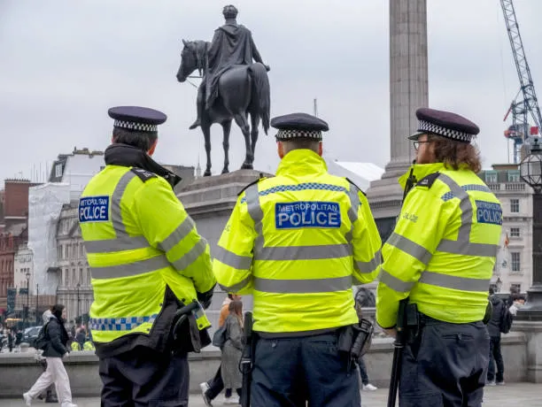
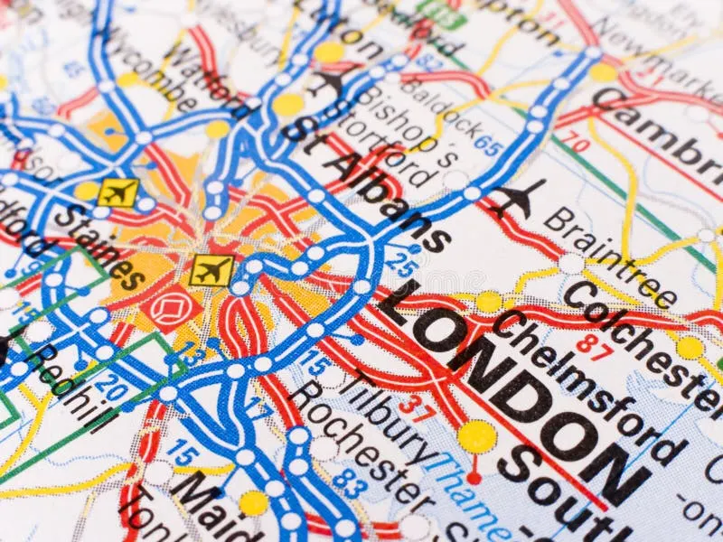

Nützliche Tipps für Transport, Geld, Sicherheit und Orientierung.
London verfügt über eines der besten Verkehrssysteme der Welt. Die Underground, Busse und Züge bringen dich überall hin.

In London wird mit Pfund (£) bezahlt. Kontaktloses Bezahlen ist fast überall möglich.

London ist sicher, aber wie in jeder Großstadt sollte man auf seine Wertsachen achten.

Google Maps, Citymapper und TfL-Karten helfen dir, dich schnell zurechtzufinden.
